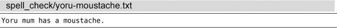
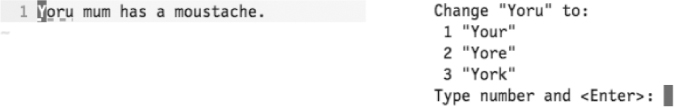
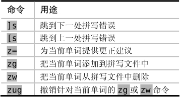

）。当我们的光标位于某个拼错单词之上时，可以通过z=命令（参见:h z=）来获取Vim提供的更正建议列表。下图所展示的两组屏幕截图，分别描述了触发z=命令前后的情况：
）。当我们的光标位于某个拼错单词之上时，可以通过z=命令（参见:h z=）来获取Vim提供的更正建议列表。下图所展示的两组屏幕截图，分别描述了触发z=命令前后的情况：技巧118对你的工作进行拼写检查
当拼写检查器被启用后，Vim将对所有未在拼写文件中出现过的单词进行标记。我们可以在这些拼写错误项之间快速地进行跳转，并让Vim提供更正建议。以这段文本为例：

很明显，第一个单词被拼错了。我们可以启用Vim内置的拼写检查器，使其被高亮显示出来：
➾ :set spell
这时候，单词“Yoru”应该已经按SpellBad所采用的语法高亮颜色被标记出来了。
一般情况下，这意味着该词下方会显示一条红色虚线，但实际的显示效果则取决于当前所采用的配色方案。
在缺省情况下，Vim将用包含英文单词的字典进行拼写检查。我们将在技巧119中看到如何定制其他语言的字典，但目前我们先暂时采用缺省配置。
操作Vim的拼写检查器
我们可以用[s与]s命令在拼写错误间相应地进行反向及正向跳转（参见:h]s）。当我们的光标位于某个拼错单词之上时，可以通过z=命令（参见:h z=）来获取Vim提供的更正建议列表。下图所展示的两组屏幕截图，分别描述了触发z=命令前后的情况：

正如提示信息所示，我们可以输入1<CR>，将拼错的单词替换为“Your”。而如果列表中没有出现理想的单词的话，我们可以按<Esc>将其关闭。
通过在z=命令之前加编号前缀的方式，我们可以直接跳过提示，并采纳指定编号所指的更正建议。如果我们有足够的信心确保第一项建议是正确的话，就可以直接运行1z=，一气呵成。
在编辑文本的过程中，我更喜欢将撰写任务与拼写检查过程分开进行。我经常在撰写文本时关闭拼写检查器，从而避免了每次由于拼写检查而造成的干扰。当撰写任务完成后，我再启用拼写检查器，对整篇文档做一次全面的检查，并将其标记的拼写错误一一改正。
下表总结了在普通模式下操作Vim拼写检查器的基本命令：

我们将在技巧120中结识zg、zw与zug这3条命令。